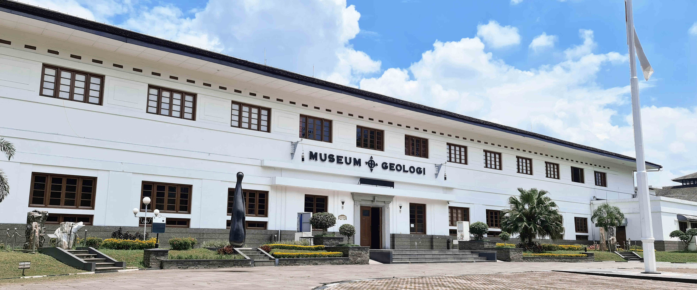

MENJELAJAHI MUSEUM GEOLOGI INDONESIA

MUSEUM GEOLOGI
Gedung Museum Geologi dibangun pada 1928 dan diresmikan dengan nama "Geologische Museum" pada 16 Mei 1929 bertepatan dengan penyelenggaraan Kongres Ilmu Pengetahuan Pasifik yang ke IV. Pembangunan dikerjakan selama 11 bulan dengan 300 pekerja dan menghabiskan dana 400.000 Gulden dibangun dengan arsitektur bergaya Art Deco berdasarkan rancangan arsitektur karya seorang arsitek Belanda, Ir. H. Menalda van Schouwenburg. Pada 1850 kegiatan survei dan penelitian geologi di Indonesia dilaksanakan oleh "Dienst van het Mijnwezen" lembaga Pemerintah Belanda. Kemudian pada 1922 berganti nama menjadi "Dienst van den Mijnbouw". penelitian geologi semakin meningkat sehingga contoh batuan, mineral, fosil semakin banyak, maka pada 1928 dibangun gedung yang diperuntukkan bagi Laboratorium dan Museum Geologi yang bertempat di Rembrandt Straat Bandung, atau saat ini Jl. Diponegoro, Bandung. Setelah Indonesia merdeka pada 1945. Terjadi pengambilalihan kantor "Chishitsu Chosasho" dari penguasa Jepang, pengelolaan Museum Geologi beralih menjadi Pusat Djawatan Tambang dan Geologi (PDTG, 1945-1950), Djawatan Pertambangan Republik Indonesia (1950-1952), Djawatan Geologi (1952-1956), Pusat Djawatan Geologi (1956-1957). Museum Geologi menjadi Unit Pelaksana Teknis (UPT) Museum Geologi di bawah Pusat Survei Geologi, Badan Geologi, Kementerian Energi dan Sumber Daya Mineral (KESDM). Pada 2013, berdasarkan Permen ESDM No. 12 Tahun 2013, Museum Geologi menjadi Unit Pelaksana Teknis (UPT) Museum Geologi, di bawah Badan Geologi, Kementerian Energi dan Sumber Daya Mineral (KESDM). Sejak 2017, Museum Geologi berada di bawah Sekretariat Badan Geologi, Badan Geologi, Kementerian Energi dan Sumber Daya Mineral (KESDM).
RUANG PAMER MUSEUM GEOLOGI
Ruang Geologi Indonesia
Ruangan yang meninformasikan tentang proses pembentukan bumi dalam tata surya keluarga matahari. Di sini ditampilkan koleksi meteroit dan tektit. Selanjutnya digambarkan tentang perkembangan kepulauan Indonesia sejak 50 juta tahun yang lalu hingga kondisinya sekarang menurut teori tektonik lempeng terkait dengan keberadaan kepualauan Indonesia diatnara 3 lempeng tektonik, yaitu Euarasia, Pasifik, dan Indo-Australia yang menyebabkan terjadinya berbagai fenomena geologi seperti gempabumim tsunami, dan aktivitas gunungapi. Fenomena dan gejala geologi utama dari masing-masing pulau besar di Indonesia dijelaskan. Ruangan ini juga menampilkan berbagai jenis dan klasifikasi mineral maupun batuan dan cara mengenalnya.
Tugas Museum Geologi
Museum Geologi mempunyai tugas melaksanakan pengelolaan, penyelidikan, pengembangan, konservasi, peragaan, dan penyebarluasan informasi koleksi geologi.
Fungsi Museum Geologi
- Penyusunan rencana dan program serta pengelolaan kerja sama
- Pelaksanaan pengelolaan koleksi geologi
- Pelaksanaan penyelidikan, pengembangan dan konservasi koleksi geologi
- Pelaksanaan peragaan dan pameran koleksi geologi
- Pelaksanaan bimbingan edukasi dan penyebarluasan informasi koleksi geologi
- Pengelolaan sarana dan prasarana
- Pelaksanaan ketatausahaan, kepegawaian, keuangan dan rumah tangga.
KOLEKSI
Koleksi Museum Geologi
Beberapa daftar Koleksi Museum Geologi, yaitu :
| Nama Koleksi |
Jenis Koleksi |
Lokasi |
| Batugamping |
Batuan |
Kupang, Nusa Tenggara Timur |
| Batu Kristal Amentis |
Batuan |
Solok, Sumatera Selatan |
| Gajah Blora |
Fosil Vertebrata |
Blora, Jawa Tengah |
| Gastropoda |
Fosil Invertebrata |
Majalengka |
INFORMATION
Senin - Virtual Tour : 08.00-0930 & 10.30-12.00 Wib
Selasa, Rabu, & Kamis : 09.00-15.00 Wib
Jum'at & Hari Nasional : Tutup
Sabtu & Minggu: 09.00-14.00 Wib
CATAT YA!
Sahabat, musmin mau infoin untuk harga tiket kunjungan di Museum Geologi yaa
- Pelajar: 2.000
- Umum: 3.000
- Asing: 10.000
Happy Studies, Sahabat!
CONTACT US
Badan Layanan Umum Museum Geologi
Jl. Diponegoro No.57, Cihaur Geulis, Kec. Cibeunying Kaler, Kota Bandung, Jawa Barat 40122
Museum Geologi
0811-8880-1929
museum-geologi@esdm.go.id
instagram
YouTube
twitter